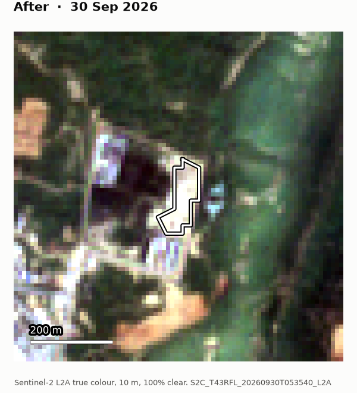
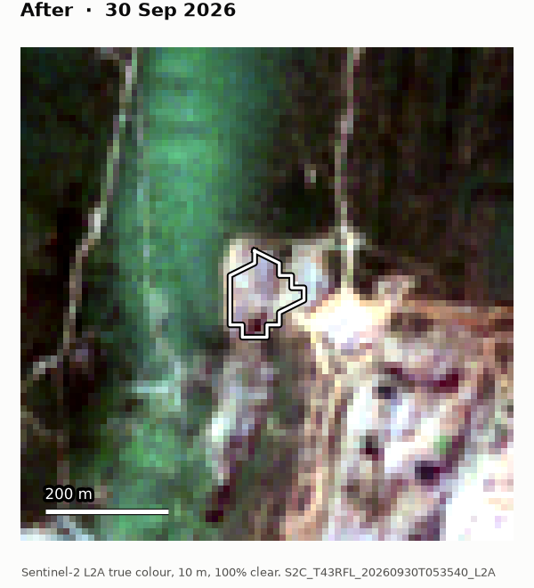
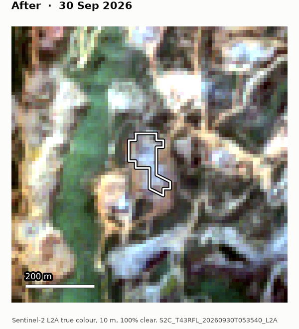
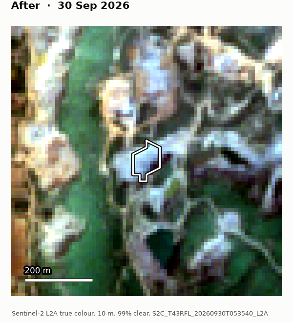
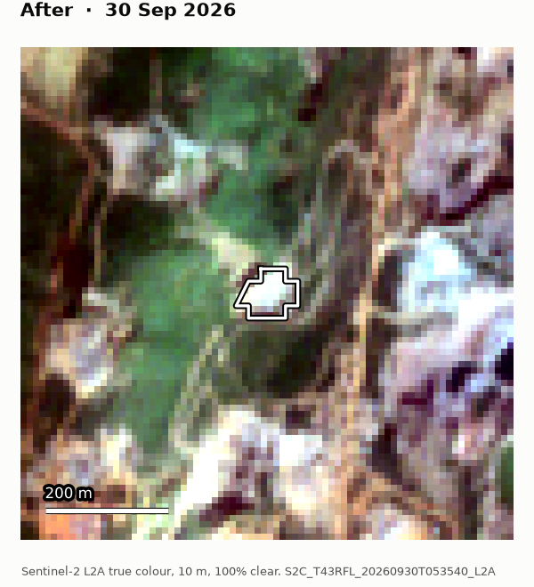
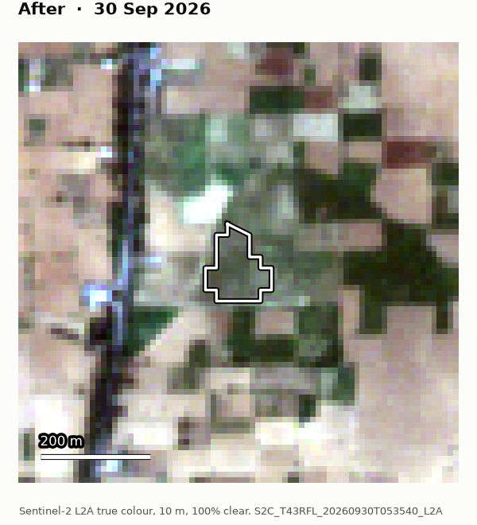
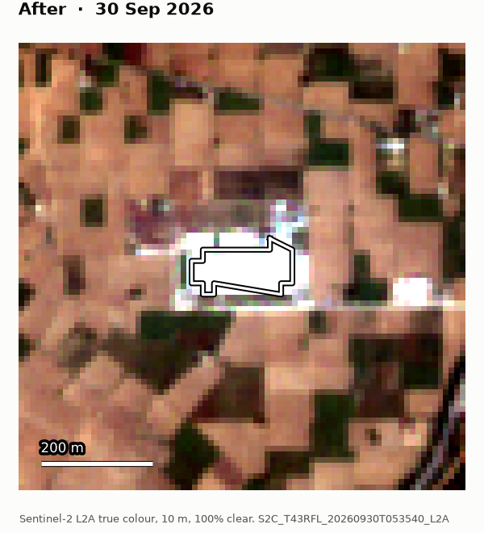
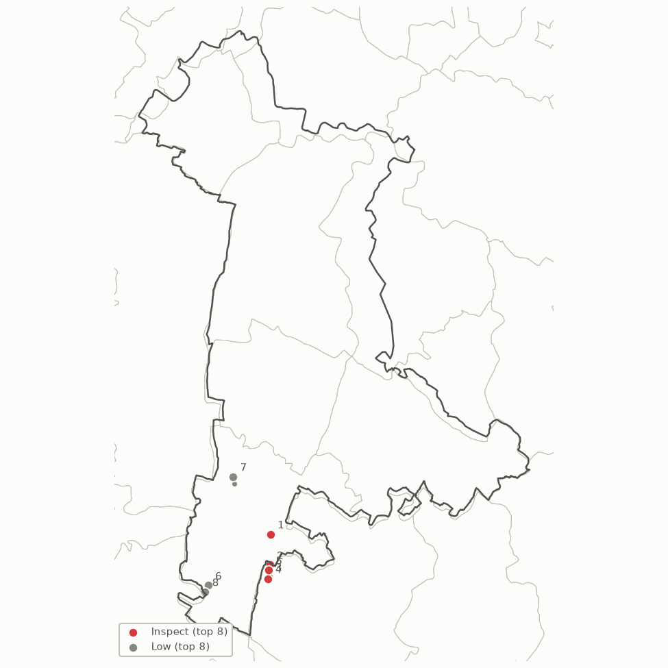

Open-cast stone quarrying: Nuh, Haryana
Change from Oct 2024 – Sep 2025 to Oct 2025 – Sep 2026. Run 2026-11-05 21:53. 9 sites detected, top 8 below.
Ranked cases
| # | Priority | Case | Location | Area (ha) | Confidence | Change happened between | Authorisation | After |
|---|---|---|---|---|---|---|---|---|
| 1 | Inspect | NUH-2609-0dc7e1 expansion |
Ghata Shamasabad(106) Ferozepur Jhirka, Ferozepur Jhirka |
1.0 0.4–1.5 |
73% | 2025-09-25 and 2026-09-30 onset Nov 2025 |
no authorised areas on file |  |
| 2 | Inspect | NUH-2609-eb71c2 expansion |
Chinawara Pahari, Pahari |
1.0 0.6–1.5 |
93% | 2024-10-05 and 2026-09-30 |
no authorised areas on file |  |
| 3 | Inspect | NUH-2609-cb39ab expansion |
Chinawara Pahari, Pahari |
1.0 0.4–1.6 |
82% | 2024-10-05 and 2026-09-30 |
no authorised areas on file |  |
| 4 | Inspect | NUH-2609-7901cd expansion |
Chinawara Pahari, Pahari |
0.6 0.3–1.0 |
93% | 2024-10-20 and 2026-09-30 |
no authorised areas on file |  |
| 5 | Inspect | NUH-2609-8ddb09 expansion |
Chinawara Pahari, Pahari |
0.6 0.2–0.9 |
97% | 2024-10-05 and 2026-09-30 |
no authorised areas on file |  |
| 6 | Low | NUH-2609-c8b48a expansion |
Rawli(91) Ferozepur Jhirka, Ferozepur Jhirka |
5.0 3.2–6.8 |
15% | 2024-10-05 and 2026-09-30 |
no authorised areas on file |  |
| 7 | Low | NUH-2609-9a66cb new site |
Nasirbas(67) Ferozepur Jhirka, Ferozepur Jhirka |
1.1 0.6–1.6 |
10% | 2024-10-05 and 2026-09-30 |
no authorised areas on file |  |
| 8 | Low | NUH-2609-6f3326 new site |
Rawli(91) Ferozepur Jhirka, Ferozepur Jhirka |
1.2 0.7–1.8 |
7% | 2024-10-05 and 2026-09-30 |
no authorised areas on file |  |
Where they are

How to read this
Order. Cases are grouped by tier: Inspect (confidence at least 70%), then Review (at least 40%), then Low. Within a tier they are ordered by priority: confidence × log₂(1 + area in ha), halved for sites mostly outside the district and cut to a tenth inside an authorised area.
Confidence is a score from hand-set weights (how persistently bare the site is, how much greenness it lost, how many clear views back it up, and penalties for cropland). It is not yet calibrated against field checks, so treat 80% as "strong", not as a measured probability.
Change happened between gives the dates of the two cloud-free images on each case page: the change is visible in the later one and not in the earlier one.
Area is the mapped extent at 20 m; the range shows the effect of the uncertain boundary pixels.
Every case is a lead from satellite imagery, not proof of illegality. Each one needs a field check.
Run details
| Oct 2024 – Sep 2025 | 33 Sentinel-2 acquisition dates used (clearest 3 per month, scene cloud < 60%) |
|---|---|
| Oct 2025 – Sep 2026 | 35 Sentinel-2 acquisition dates used (clearest 3 per month, scene cloud < 60%) |
| Grid | 637 × 996 px at 20 m, EPSG:32643 |
| Imagery | Copernicus Sentinel-2 L2A Collection 1 via Element 84 Earth Search (sentinel-2-c1-l2a) |
| Context | ESA WorldCover 2021 (CC BY 4.0); Copernicus DEM GLO-30 |
| Boundaries | geoBoundaries India (ODbL; sourced from LGD and Census 2011). Not an official Survey of India map. |
| Timings | boundaries 2 s · search 0 s · composites 379 s · context layers 0 s · detection 0 s · jurisdiction 0 s · case files 323 s · total 705 s |
| Version | sentinel 0.1.0, config 91a370a03f1b |
Machine-readable outputs: cases.geojson, cases.csv.